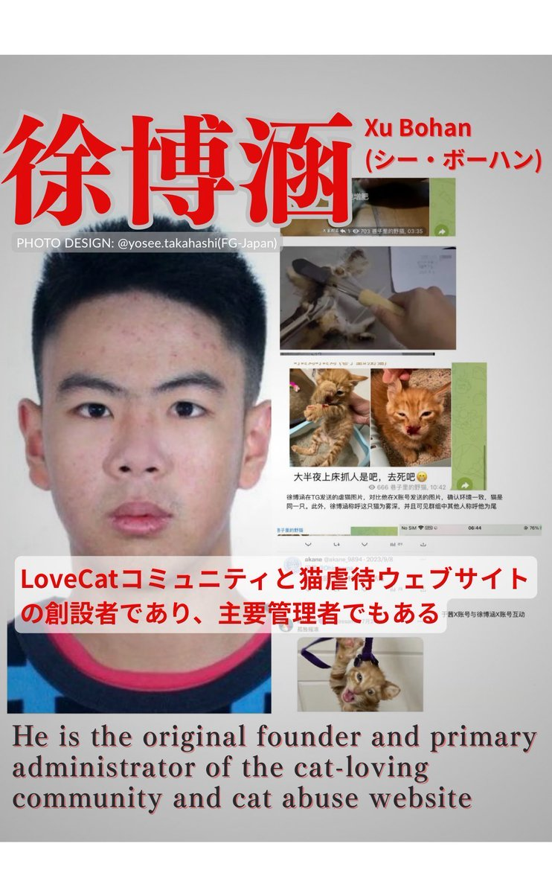

ゆず
@Yumi320521
RT @lovcatshutdown: 浪人新闻管理员徐博涵，爱猫社区创建者，爱猫社区网站初代站长。06年生，虐猫虐鼠。去年在日本读语言学校，现在暂时躲在浙江杭州老家。
徐博涵的抖音好友（账号81136049413）陈子豪也是一个虐猫蛆哦。 …

刘硕
@lovcatshutdown
浪人新闻管理员徐博涵，爱猫社区创建者，爱猫社区网站初代站长。06年生，虐猫虐鼠。去年在日本读语言学校，现在暂时躲在浙江杭州老家。
徐博涵的抖音好友（账号81136049413）陈子豪也是一个虐猫蛆哦。 https://t.co/8JKHCpyhmn